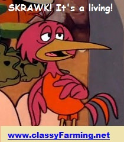

"classy farming"
or maybe, "vegan factory farming"

We like to think of factory farm animals as a kind of fuzzy co-worker. We want them to have a nice life while keeping costs down.
So, we want CAFO farmers to consider a couple of simple, cheap ideas:
So, we want CAFO farmers to consider a couple of simple, cheap ideas:
- Farm Radios - Play the barn some music. Make it fun, like you'd want for your cow. Animals like it, it decreases their stress level, gives them something to keep them from being bored. It's going to reduce the level of stress hormones in the meat, too!
- Merciful Slaughter - Can we just pass them through a room full of cheap old nitrous oxide and knock them out first? Fear hormones poison the meat anyway.
"SKRAWK! It's a living!" is our standard, as the bird says. "This ain't the Ritz," but then again, not too shabby a life for them. That's the goal.
Memepic!

Find us on Facebook

| back to |  | copy left out overnight with gross roaches | |